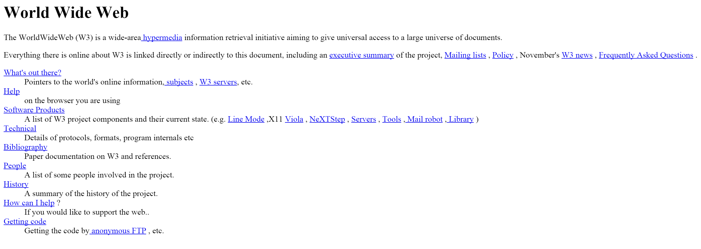

Front End dev @ Delphic Digital
Sass!
You are a mixed bunch
| Front end love? | Front end hate? | Front end no idea? |
There was HTML and it looked like this
There was CSS and it looked like this
We have SASS!
CSS can be difficult
What does Sass do to fix this?
example
//CSS
h1 { color: #C45655; }
h2 { color: #C45655; }
h3 { color: #C45655; }
h4 { color: #C45655; }
//SASS
$fuzzyWuzzyBrown: #C45655;
h1 { color: $fuzzyWuzzyBrown; }
h2 { color: $fuzzyWuzzyBrown; }
h3 { color: $fuzzyWuzzyBrown; }
h4 { color: $fuzzyWuzzyBrown; }
http://chir.ag/projects/name-that-color/
//CSS
.myDiv {
background:black;
}
.myDiv ul {
list-style-type: square;
}
.myDiv ul li {
color:green;
}
//SASS
.myDiv {
background: black;
ul {
list-style-type: square;
li {
color:green;
}
}
}
// main.scss
@import 'reset';
@import 'typography';
@import 'components';
@import 'layout';
// _reset.scss
html,
body {
margin:0;
}
@mixin border-radius($radius) {
border-radius: $radius;
}
.box {
@include border-radius(10px);
}
Sass: sass-lang.com
Sass Architecture: sass-guidelin.es